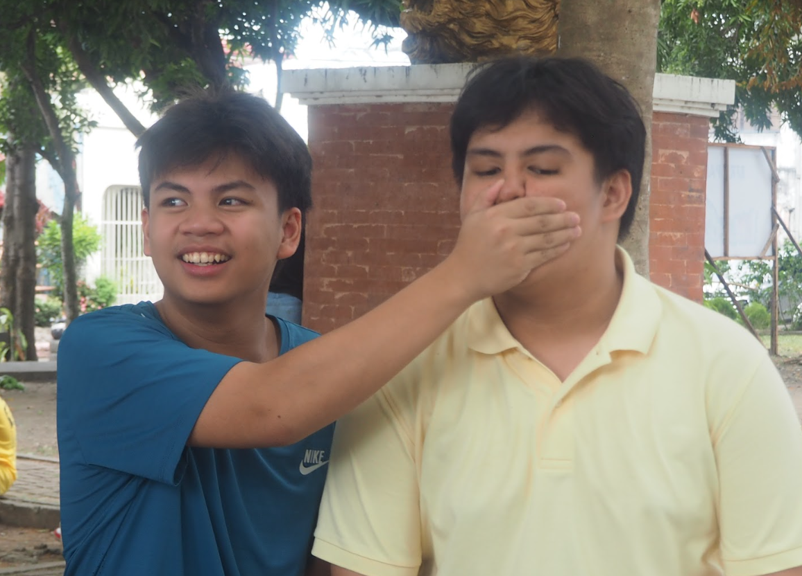
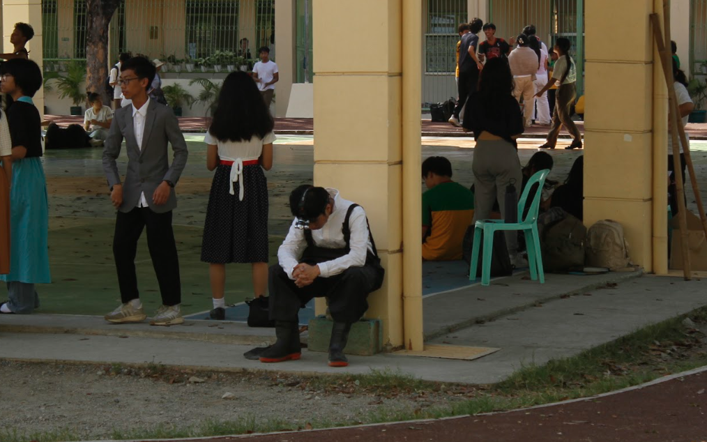
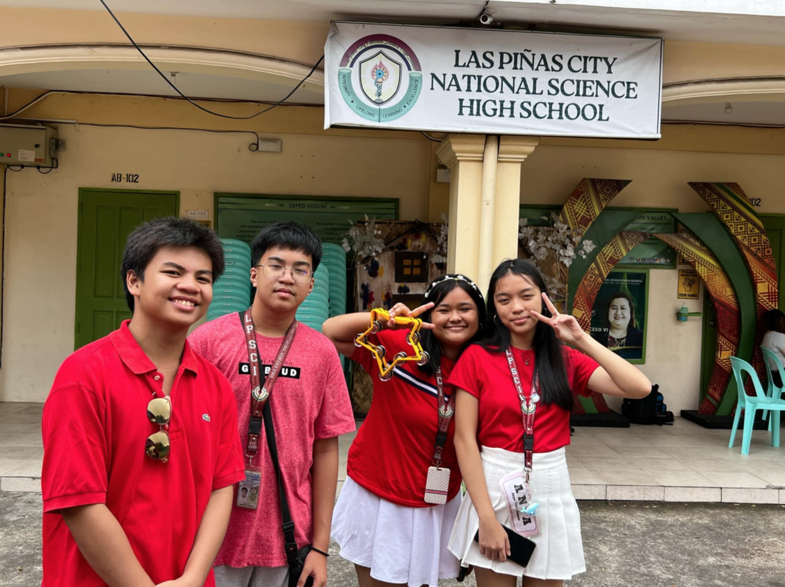

| MY ICT PORTFOLIO | ||||||
| HOME | ABOUT ME | 4TH QUARTER ACTIVITIES | BROWSER OUTPUTS | REFLECTION | ||
What a time to be alive. Its the 4th quarter, my last quarter in Grade 9. I will truly miss the moments I had with all my classmates, teachers, and friends. I will forever cherish the memories I have created with many wonderful people that have made my time here in Grade 9 unforgettable. I want to use this as a thank you to you Ms. Uminga as you have been one of the best teachers I have ever had in my school years. I would like to thank you for always looking out for 9-Family and me even if we may not be the best students to you. Thank you for being such an amazing mentor and role model to all of us here. I am truly greatful to have had you as a teacher in Grade 9. It is because of Ms. Uminga that I have managed to grasp the beauty of coding. The pleasure and victory it gives when I finish a code, the hardwork that comes with it, the blood sweat and tears that are poured onto every output. I now know the value of coding. Although it may not be useful to me in the future, I am sure that by coding, I have learned many new valuable lessons that I will not forget in my daily life. Kaya as a final goodbye to coding. This is Caleb Andrei D. Torio of 9-Family. Singing out. Thank you all.


